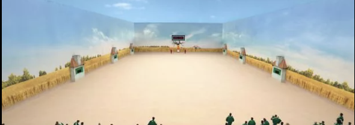
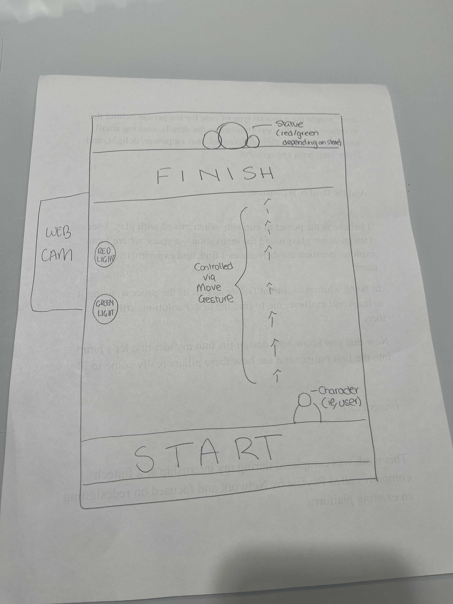
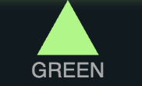
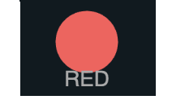
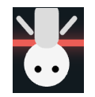
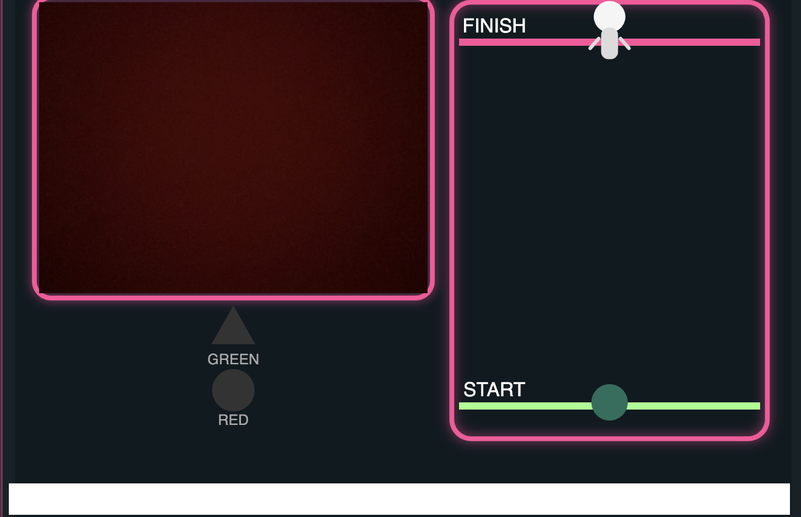
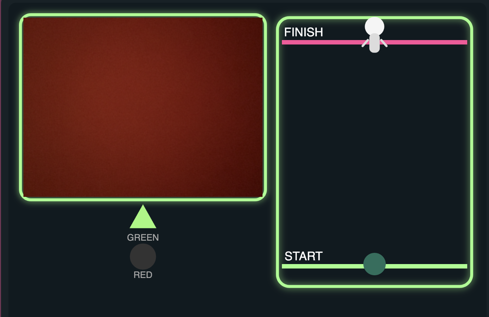
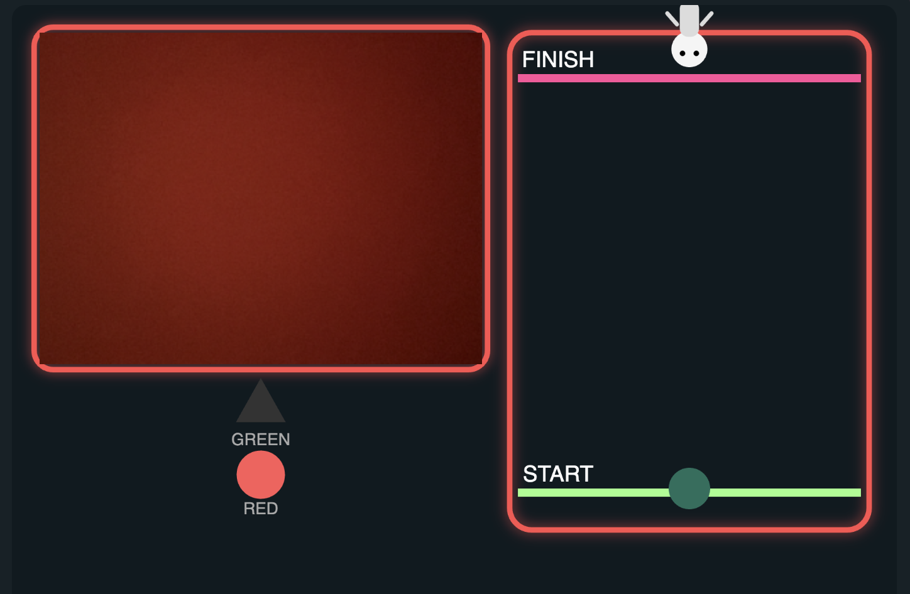
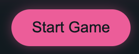
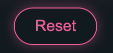

This project is inspired by the “Red Light, Green Light” challenge ("무궁화 꽃이 피었습니다"-Mugunghwa kkochi pieotseumnida) from Squid Game. In the show, players advance toward a finish line but must freeze completely when a large doll-like machine turns around to detect movement.

In class, we explored Teachable Machine and ml5.js for webcam-based image classification. This week, I believe we are exploring gestures! This, in particular, made me want to build a version of the game where the player’s body becomes the only controller — no keyboard or mouse.
When the Green Light symbol is on, players move their on-screen character towards the finish line by performing a specifically-trained Move Gesture in front of the webcam. Alongside this, users can visually hear the famous audio that accompanies the players in this challenge. Once the audio ends, the game switches to Red Light (green symbol turns off, red symbol turns on) and the player has to return to a Still Pose to avoid detection by the 'statue' at the top of the field.
Green Light
Red Light
This game uses the player's body as the complete input system.
Physical Inputs
Digital Output
1. Teachable Machine Model:
2. Game States:
3. Movement Logic:
4. Visual Components:

5. Timing:
The following displays my WIP. Currently, I am struggling with accurate movement detection and may need to fine tune my learning model. Although, I hope this gives a general idea of what I want my interface to look like.
With a solid technical and conceptual foundation in place, and after receiving feedback from my professor (Maxim), I decided to refine both the interaction logic and the interface of the prototype. Rather than expanding scope, I focused on stabilizing the system, with an emphasis on clarity and strengthening the overall look and feel of the experience.
One of the most significant changes involved rethinking how the player physically controls the game. Instead of relying on a single trained image-classification gesture for movement and a still pose for freezing, the prototype now uses ml5.js HandPose and BodyPose models for more direct and responsive control that works in any environment.
Specifically, the player now advances towards the finish line by pinching their thumb and index finger together, detected through HandPose tracking. To enforce the “freeze” mechanic during Red Light, the system tracks the player’s nose position via the webcam. Any detectable movement of the nose while the game is in Red Light results in an immediate loss. This shift allowed the interaction to feel a lot more embodied and responsive, while also reducing reliance on model training and environment calibration.
After implementing these interaction mechanics, I made the decision to remove the audio component of the prototype. Due to time constraints, I felt that I could not explore audio feedback with the depth it deserved. Instead, I pivoted focus to strengthening visual state feedback so that players could clearly understand when they were allowed to move and when they needed to freeze.
To support this, I introduced several interface elements that communicate game state without relying on text:






Once the core interaction and feedback systems were stable, I focused on UI refinement and cohesion. This included applying a consistent Squid Game–inspired visual theme across the interface (shapes, color palettes, typography, and layout) — to create a more aligned experience.
I also refined the game flow by introducing Start and Reset glowing buttons. In earlier iterations, the game began immediately upon page load, which left little room for players to understand the rules or prepare. By requiring the user to intentionally start the game, the experience now allows time for orientation and instruction-reading before interaction begins.


Below are several short videos that demonstrate how the game works in practice. Due to privacy considerations related to webcam access, I am unable to embed the live p5.js sketch directly on this page. However, the interactive prototype can be accessed and experienced here: View the live prototype on p5.js .
WIN CASE
LOSS CASE